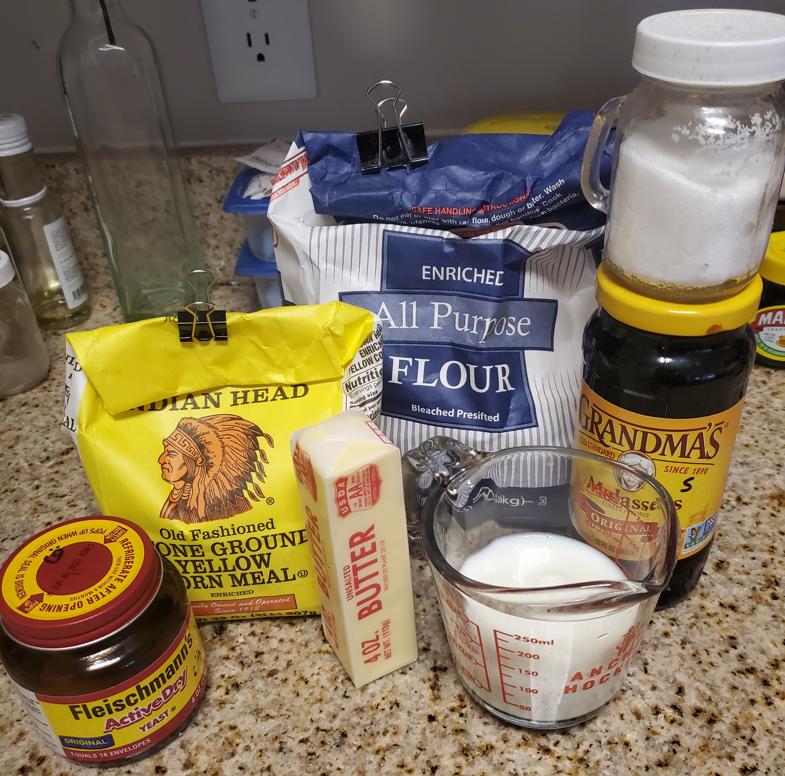
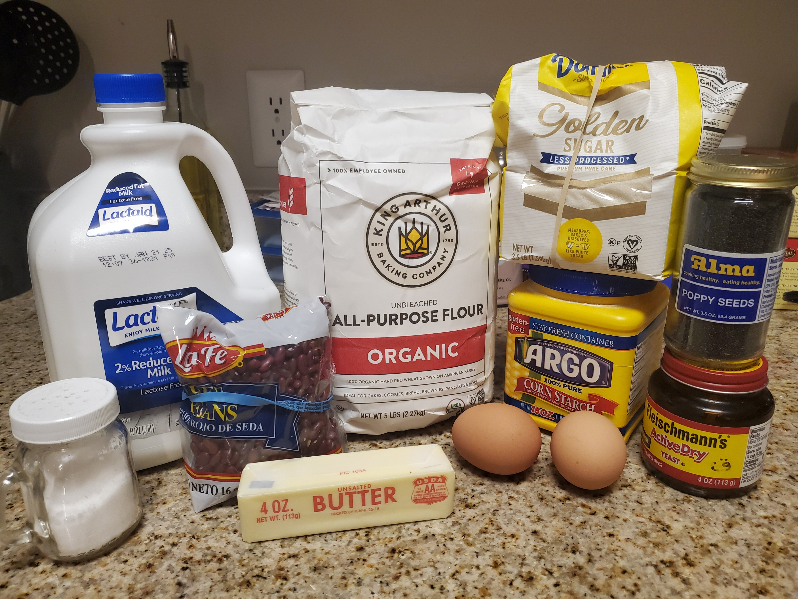
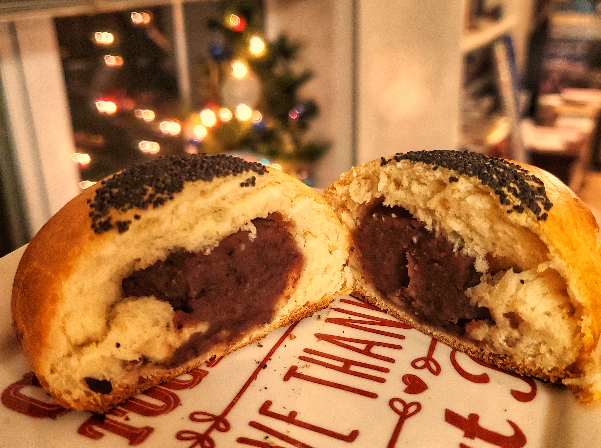
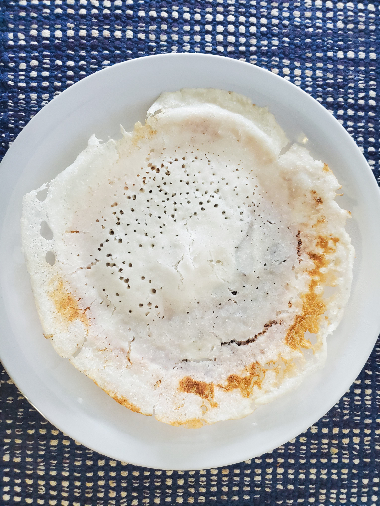
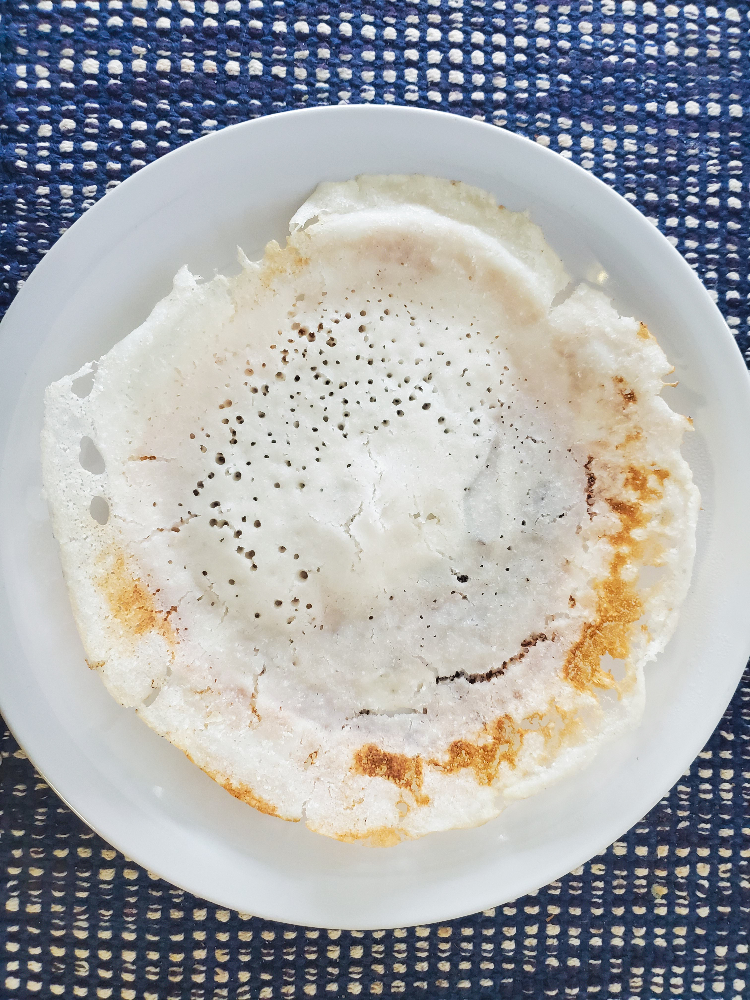

Baking every bread in alphabetical order!
In late 2024, I got the weird idea to try baking every entry in the Wikipedia list of breads, in alphabetical order. This endeavor has gotten me to try things I never would have thought of trying, to bake or to eat.
I will try to snap the ingredients as well as the outcome, to give a sense of what's involved in each recipe.
Anadama bread
This is apparently a traditional bread from New England, but despite having lived 1/3 of my life in Massachusetts, I had never heard of it. I asked around and some New England natives knew it, and pronunciation was mixed between Anna-damn-uh and Ahna-dom-uh. It's a fairly ordinary yeast bread, baked in a tin, but with the addition of cornmeal and molasses. Legend has it that the name comes from a man exclaiming "Anna, damn her" after growing fed up with his wife's meals of cornmeal mush and molasses, and inventing this bread in order to break the monotony of consuming these ingredients.
It's an easy recipe and would make a great introduction to yeasted breads.
It was delicious served warm with butter, but then, what isn't? But it was pretty stale on day 2. I bet it would make great french toast.

Anpan
Anpans are lovely little yeast buns, usually filled with red bean paste and marked on top with a circle of sesame black seeds. They were invented in Japan in 1875 by Yasubei Kimura, an ex-samurai who became a baker after the samurai class was dissolved.
Anpanman, a superhero with an anpan for a head, is the subject of a children's picture book and anime series that teaches children about germs and food safety. Other characters can take a bite out of his head to regain their strength. Fortunately the baker character can just make him a new head.
This recipe involved a lot of kneading. The recipe suggested a slapping technique where you whack the bread against the counter. I made this in November 2024 and it was honestly extremely therapeutic. But I think I kneaded so vigorously that I may have actually killed some of the yeast through mechanical injury. I definitely didn't get as much of a rise as the recipe said I was supposed to. The texture was a bit dense- almost like a bagel. Unfortunately I've never had the chance to try an anpan that was made by someone who knew what they were doing, so I don't know if that texture is intended. At some point I will make them again and try to get them fluffier.
I wanted the beautiful contrast of black sesame seeds without the price, so I substituted black poppy seeds. I also got my red beans at Market Basket and realized later that they were Central American red silk beans (frijol rojo de seda), which are a bit kidney-shaped (but not the same as kidney beans) and yet not the mung beans / adzuki beans used in East Asia. But they cooked down into a tasty red paste all the same.
Appams
Appams are coconut and rice flour fritters popular in the state of Kerala, India. You can tear off pieces and use them to scoop up other foods. Or you can serve food in them, like a bread bowl, because they're cooked in a wok-shaped pan and come out bowl-shaped. The edges should be lacey from the popped bubbles, and browned to a crisp, while the middle should be stark white, soft, and fluffy. Notably, this is our first gluten-free bread on the list and it's also vegan. Paired with lentil curry, this is a nice option for diners with dietary restrictions.
Appams are traditionally leavened with "toddy" or palm wine, which contains wild yeast. The sap from palm trees can be collected in the morning and by the afternoon the yeast has already fermented into something fairly boozy. Without access to fresh toddy, I resorted to this lovely video recipe that shows how to use dried yeast instead It also gives options for using grated coconut or coconut milk.
On my first attempt, I used coconut milk and I tried to make my own rice flour by grinding up raw rice. It turns out I don't have a fancy enough blender for that, so my rice "flour" was too coarse and kept sinking out of the batter. On my second try I used store-bought rice powder and I decided to try grated coconut. This version worked much better for me.
I found that making the appam batter is not hard, but there's a lot of technique in getting them properly cooked. You need to ladle in the right amount of batter, swirl the pan properly so that you get thin crispy edges and a thicker middle, use the right amount of heat while covering the pan to steam the middle, and use more heat and oil on the sides to get the edges to lift off the pan. It takes practice, and the right technique probably depends a lot on the pan. I used a nonstick wok, which seemed not ideal, but I learned to make it work.
I was rewarded with crisp on the edges, fluffy in the middle, white and brown hoppers that smelled strongly of coconut. They made an ordinary lentil curry much more fun to eat. I wasn't sure if the leftover batter would keep in the fridge, but I did try making some more a couple days later, and to my surprise they smelled less of coconut and had developed a more complex fermented flavor.
 
